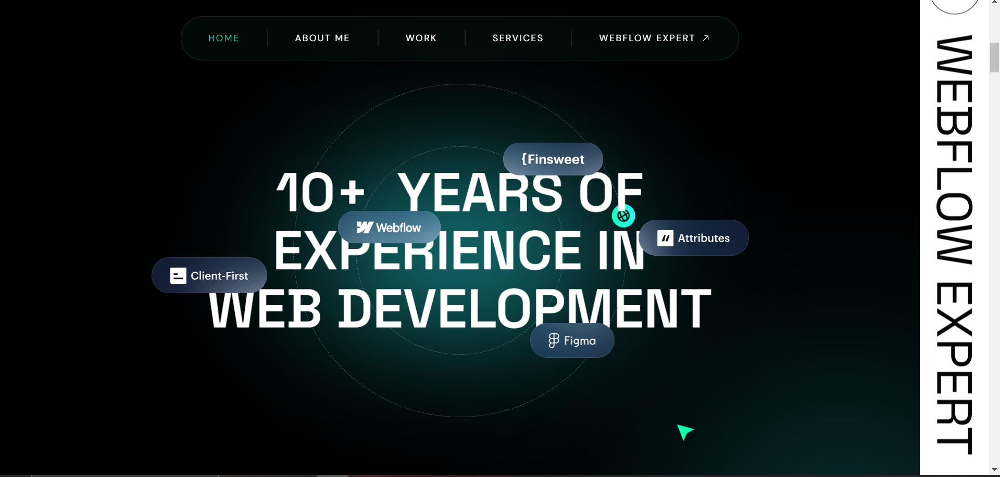
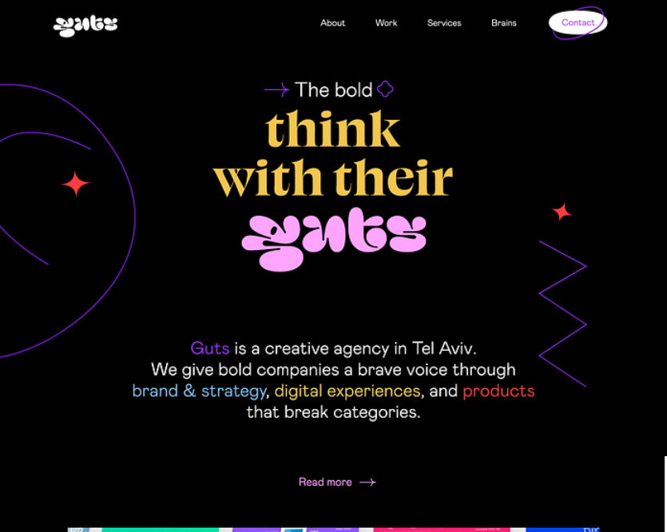
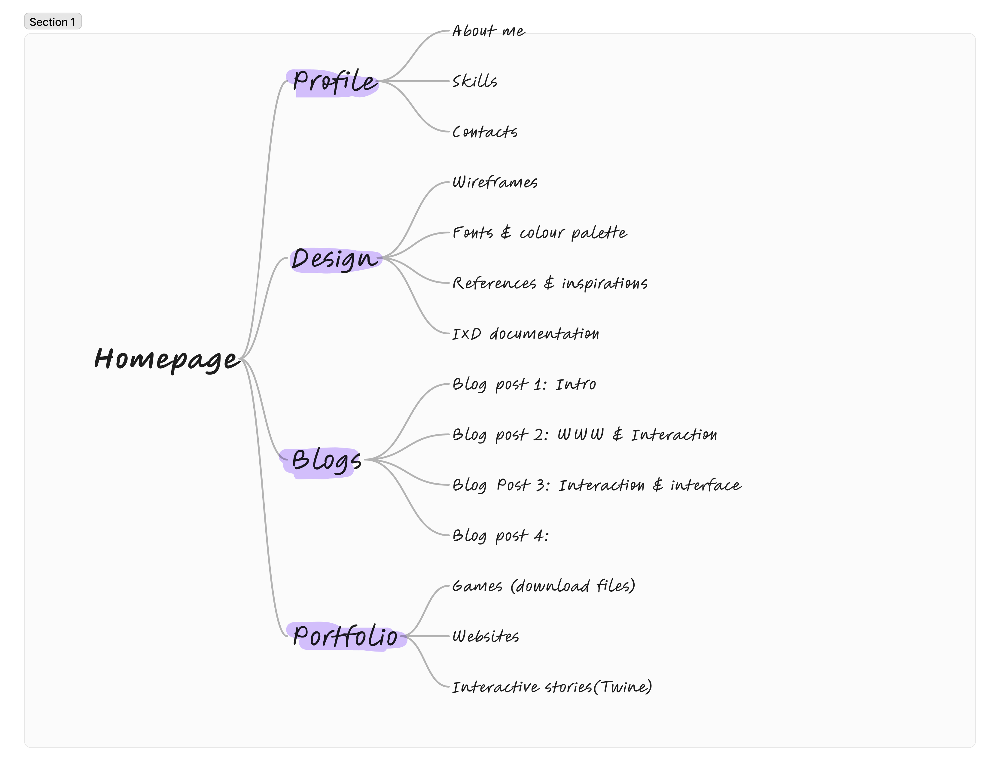
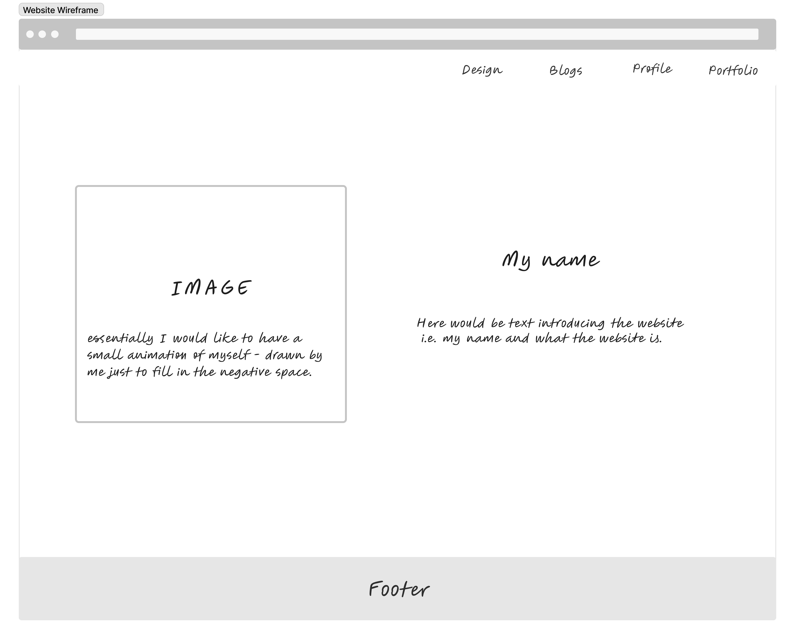
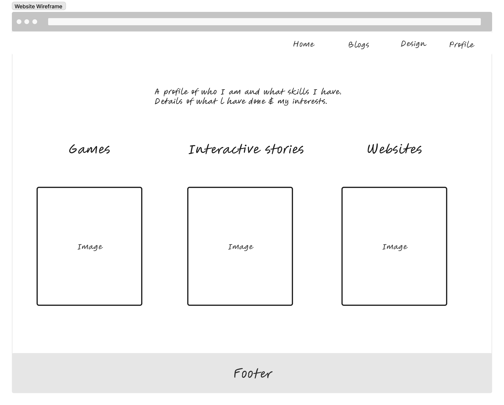
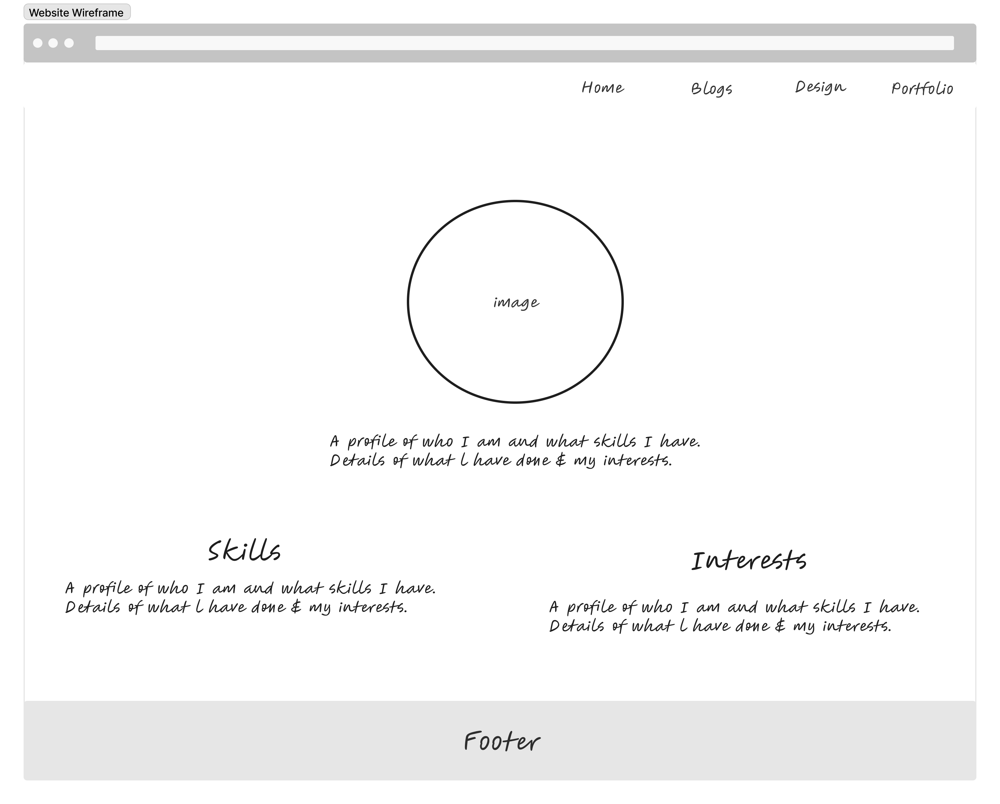
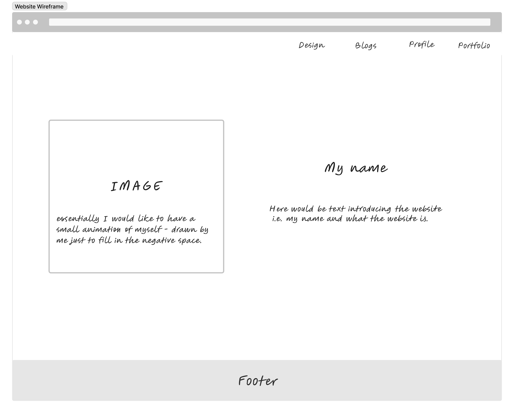
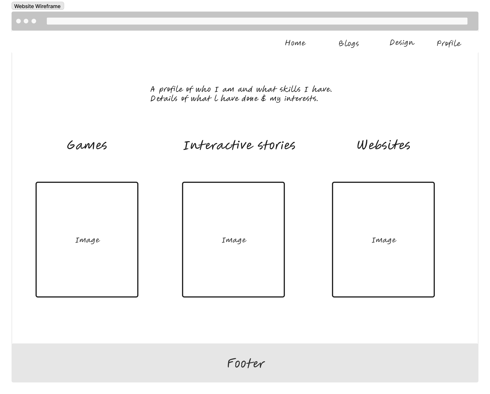
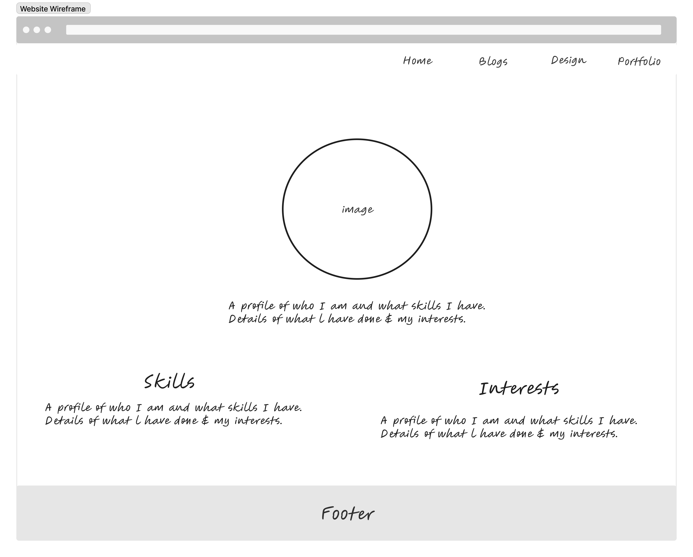

Goal:
The goal for this website aims to create a portfolio showcasing my strengths and skills.
I want the website to be aesthetically pleasing but also functional creating a user experience that makes users feel like they can browse through it (the website).
Essentially what this website should do is present my talents (e.g. I’m a UI/UX designer and programmer- I want the user to see that just from looking at the interface)
I want the users to see mainly the interface and how it behaves, essentially wanting players to “explore” the portfolio as they would for a game.
I want the users to engage with the website presented to them. I’m aiming for something simple and unique as I have found that simple can and does work better than having something complicated. I want the users to feel like the website is easy to engage with but also in a creative way.
User:
My user for my website is potential employers. Potential clients as well for situations where I find myself doing freelance work on the side.
These potential clients and employers may want to see what skills I possess and the work that I have done.
They would like to see what I could potentially do for them and also get a sense of what kind of person I am.
Content:
The types of content that would be present on the website would be games, interactive novels, a design ‘journal’ (once JavaScript is introduced this task can be executed), images, and articles as well.
What is important for the user and me is what I present to the user, what I want to show the user and most importantly the content I choose to share based on what goals I've set and who my user is.
What is most interesting would be my design section as well as the profile and portfolio because I think these are the sections that would showcase what kind of person I am, my design process and what I can do and what I have already done.
References and Inspirations
Inspiration 1:

This is Everson Kayser’s portfolio website. The user sees this when they scroll down once the website has loaded.
I like how this shows the user how much experience he has in the web development industry, his expertise and what software he has worked with.
The colour palette is also quite eye-catching, it isn’t too bright or dull- it’s a balance of both, but more on the darker tones side.
It almost resembles the Apple website colour palette.
I would like my website to display my expertise similarly on the homepage.
Inspiration 2:

Rafel Varona offers users a colourful and creative portfolio website. He displays his work from the homepage as seen in the above image.
I like the creative side of it, the website does not use text too much there’s a balance of both the use of images and text.
For My website mostly the portfolio section, I would like to use a similar approach- where I use screenshots from my project or possibly incorporate videos of gameplay and so forth.
The colour palette of this website looks good, it’s soft and the colours work well together along with Rafael’s work.
Inspiration 3:

Melyssa Griffin’s was quite fun and interesting to explore. From the homepage, we can tell what the website will entail and what information we can learn and gather from looking through the website.
This website is easy to navigate, and everything is clear to the user making the experience quite great.
The link being clearly labelled and easy to find made it easier to go to the specific sections I wanted to explore.
I also liked the colour palette a lot, the colours worked well together along with the font colours. The font choice allows for readability which makes the design accessible.
for my website I would like to incorporate the clarity that has been shown in Melyssa Griffins’ portfolio website,
I want it to be easy for the user to understand what the website is and make it easy for the to navigate through it.
Inspiration 4:

What attracted me to this website was the colour palette not so much the content of the website.
The website makes use of patterns and colours which is nice and creative.
I would like to play around with this colour palette and playful idea, iterations would be to fit how i would like the website to behave.
Design choices:
Wireframes:
-The wireframe designs are very basic and simple now, not much thought and designs were thought of during the planning stages of the project.
-For each page I only have one design because I'm only working with HTML and have no added styling yet.
-I have also decided to include additional wireframes for certain sections to show that these will be a part of the first iteration process once we start using CSS and including JavaScript as my ideas do include those two languages.
-I wanted to keep the wireframes very basic now so that it is quite easy to navigate the website. These wireframes will change with further iterations.

.png)
 





Fonts:
- Times New Roman I’ve decided to use Times New Roman because it’s a font that compliments the aesthetic of my website and it acts as an accessible font.
- It is easy to read and there is a clear distinction between the letters.
- The font may change once the styling for the website is established, this is heavily dependent on the type of interface I want my website to have.
- The font colour will be dependent on the colour palette that is chosen and which colour makes the text readable while also making sure that both the font type and colour match the aesthetic of the website or enhance the look.
Colour Palette:
I have 6 colour palettes which I used a generator to generate. I tried playing around with bright colours, dark colours and neutrals as well.
Neutral colours seem to look more aesthetically pleasing for the look that I want to go for. From the websites I have engaged with, neutral colours look good and attract attention in a minimalist manner which is what I would like for my website. On the left are examples of websites I've engaged with that use a neutral colour palette.
A neutral colour palette also tends to be more accessible in terms of colour blindness and it in a way avoids using colours that are either too dark or too light.